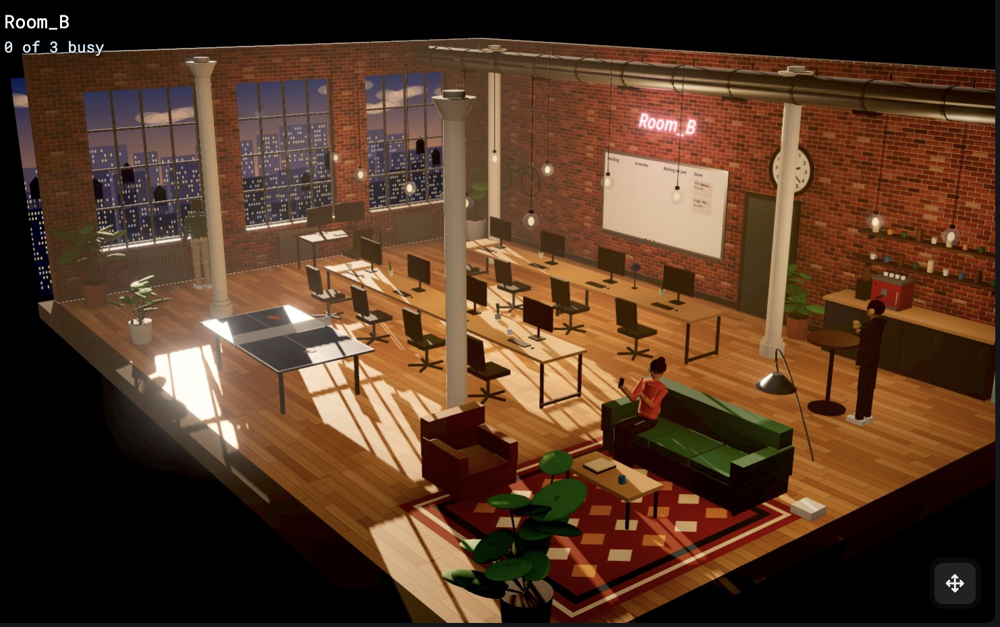

The Second Office's First User
"Looking the length of Building 58, Paul had the impression of a great gymnasium, where countless squads practiced precision calisthenics - bobbing, spinning, leaping, thrusting, waving. . . . This much of the new era Paul loved: the machines themselves were entertaining and delightful."
On Sunday I gave an unused tool of mine to a second office of Claude Code sessions. I told its PM, which is also a Claude Code session, to use the tool the way a new user would.
The PM filed what was broken, and the office fixed it and kept using it. The most important bugs did not show up in that first walkthrough. They showed up when the PM used the tool for real work.
That is what this post is about. Can a team of AI workers use software as its own user, improve it through real work, and check that the user gets what it came for? In this experiment the office did the first two. The third is the open problem, and I think it decides how much software can be built this way.
Users in the same building
My office is a web page where each worker is a Claude Code session with a role. I named it Building 58, after a factory building in Kurt Vonnegut's Player Piano, a novel about machines that do people's work. It runs like a small team. A PM writes tickets, a Lead plans the work, Devs build, and reviewers check each pull request before it merges. As the last post described, Autopilot starts the tickets I approve and merges the ones that pass review, and the office restarts itself on the new code.
Software teams call it dogfooding when they use what they build. The builders hit the bugs their users would hit, and they hit them first. The office does this with itself every day. I wanted to know whether it could do the same for software that is not the office: use a tool for real work, file what is broken, fix it, and keep using the new version.
An eval tool nobody used
The tool was edd-platform, which I built over the summer to make eval-driven development practical. The day after this experiment started, LangChain published a useful explanation of eval-driven development. Its loop is familiar: say what good looks like, write the eval, run a baseline, make a change, and compare each test. edd-platform follows that loop but starts one step earlier, with finding out why an agent fails and turning those failures into tests, and it ends with a gate that decides from the evidence. It stalled in August, and nobody had used it for real work.
The office has the problem edd-platform was built for. Each worker follows a brief, the written instructions its session gets when it starts: what the role does, its rules and the skills it can use. When I change a brief, the change ships after a code review, with no check that the worker now does its job better.
So on Sunday morning I opened Room B. It is a second copy of the office, with its own relay on its own port, its own Board and its own sessions, and it runs beside the first one. I gave it edd-platform's repo and told its PM to use the tool end to end the way a new user would and to file a ticket for everything that was broken, confusing or missing. In this experiment Room B did both jobs: its PM used the tool, and its Devs fixed it.

The first user
The PM filed 14 tickets in its first 11 minutes, from the setup to the core of the product. The start script killed other sessions' servers. The setup wizard failed for agents made with the New agent flow.
The biggest problem the PM found was in the main loop. After it saved its analysis of a failed test, there was no way to turn that analysis into a fix. The workflow stopped right where the product was supposed to become useful.
A Dev who was tracing that loop found a worse bug. The gate counted every failure ever recorded and never cleared one, so a failure fixed in a later version still blocked it. My eval platform could never let an agent pass. That fix merged before lunch.
Evaluating its own brief
At noon I gave the PM a real job: use edd-platform to evaluate and improve your own brief.
Version 1 was the brief the PM was working from. The three tests came from that morning's work. The rubric came from the rules I hold every ticket to, such as one pull request per ticket, criteria that can each be checked, real blockers and plain words.
The PM ran version 1 and read its outputs. It named four ways version 1 failed, such as bundling several changes into one ticket and filing new tickets for work that already had one. It tightened the rubric and judged version 1 again, so both versions were held to the same bar. The platform then proposed a fix, which became version 2, and the PM compared the two and asked the gate. The tool reported these verdicts, from one run of each test. All of the runs happened before 12:17 that day, while the bugs in the next section were still in the tool.
| Test | Version 1 | Version 2 |
|---|---|---|
| Turn a goal into tickets on an empty board | Fail | Pass |
| Re-map tickets after a design doc | Fail | Fail |
| File one bug | Fail | Pass |
Version 2 looks better, and the gate blocked it. One test still failed, which was fair, but two bugs in the gate also kept it from passing. These results are preliminary. Each test ran once, and version 2 was built from version 1's failures on the same three tests. The PM warned that version 2 mostly restated its own rubric. So the comparison shows that the brief improved on these tests, not that it will do better on work the PM has not seen. LangChain's post names the fix for both: several runs per test, and a held-out set of tests that nobody tunes against. I didn't trust the results, and neither did the PM.
Real work found the real bugs
The PM went looking for why, and the answer was in the tool, not the brief.
Two bugs meant the test was not the one the PM had set up. On every run, the tool put its own text in front of the brief and told the agent to "recommend a safe next action," so a ticket-writing agent was tested with someone else's instructions mixed into its own. Each test's setup context, such as the board the PM was planning against, never reached the agent.
The third bug meant the score itself could not be trusted. The judge saw only the first rule in the rubric and gave one verdict for all of them, so a passing score could hide a failed rule. The PM noticed when it tried to see which rule had failed and could not. Version 2 passed the first test, yet the PM found ticket IDs that did not exist and no blockers at all. A score can look real while the evaluation behind it is wrong.
None of these bugs were among the 14 tickets from the morning walkthrough. The walkthrough found problems in the workflow. Real work found problems in the evaluation itself. Testing a feature asks whether it works, and using it to get a job done asks whether it works for that job. That is the best argument I have for the loop. Each bug became a ticket, and the office fixed all of them by the next morning.
More software built this way
edd-platform is a developer tool, which is the easy case, because the office's workers are already developers. The same loop should work for other tools they use all day, like a ticket tracker, a code review tool or a docs search.
The harder case is software whose users are not developers. I spent sixteen years building software for colleges, much of it for admissions, so that is where I would try it first. A developer agent is a poor stand-in for a student, so the users would be sessions of their own, each with a user's brief and a user's goal.
An applicant needs to finish an application and upload a transcript before the deadline. An admissions counselor needs to see what is missing and ask for it. A student registering for classes runs into a hold or a full section, and an advisor has to approve the new schedule. Each wants something different and gets stuck in different places.
One room in the building could play those users while another room builds the software. The users' room files the bugs and the feedback, and the developers' room fixes them and ships a new version for the users to try.
This would not replace testing with real students and staff. What it could do is find broken steps before a real applicant does. Whether a simulated applicant's success means a real one would succeed is the question in the next section.
Calibrating the users
This is the biggest gap. Filing bugs is useful, but it is not the outcome. An applicant does not open an admissions portal to find bugs. They open it to apply. So a simulated user needs a goal, and the measure is whether it reaches that goal with the product.
The PM came for a better brief. The tool works much better than it did on Sunday morning, but it has not delivered that outcome yet.
A simulated user is also not a real one. It does what its brief says, it is more patient than most people, and it shares the model's blind spots with the developers who fix its bugs. It might finish a task because it can guess what the developer meant, where a person would give up.
So the simulated users have to be checked against real ones, much as an LLM judge is checked against people's labels, which I wrote about in Can You Trust Your Judge's Score? The two problems are related, but they are not the same. Is the user's goal one a real user would have? Does it use the product the way real users do? When it succeeds, do real users succeed too? The last question matters most.
| Level | What it shows |
|---|---|
| Simulated use | The user can operate the product. |
| Goal-driven use | The user can get a stated job done. |
| Calibrated use | Success in the simulation predicts success for real users. |
Room B reached the first level and made progress on the second. The third is the research problem.
What's next
The next step is to give each simulated user a written goal and measure whether it reaches it, starting with the PM's rerun on the fixed tool.
Room B showed that agents can use software and find problems I missed when I built it. The harder question is still open. Can they stand in for the people who use that software, and can I trust their success as evidence that the software works? Answering it needs real users to compare against.
References
- The Office Builds Itself, the previous post
- Building58, the office's code
- Can You Trust Your Judge's Score?, my primer on checking an LLM judge
- What Is Eval-Driven Development? on LangChain's blog
- edd-platform